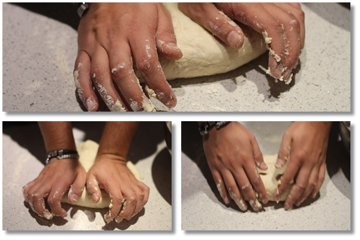

Receta de Masa de Pizza Casera
Ingredientes
- 400 gramos de harina de trigo
- 200 ml de agua tibia
- 2 cucharadas de aceite de oliva
- 15 gramos de levadura fresca
- 1 pizca de sal
Preparación
- En un bol agregamos el aceite, el agua y la levadura. Mezclamos y seguidamente le añadimos
la harina y la pizca de sal. Una vez que tengan mas o menos mezclado todo en el bol lo
pasamos a la mesada para amasar bien.
- Ahora comienza el amasado. Ponemos un poco de harina en la mesada y tendremos que amasar
como 3 o 4 minutos sin parar. Veremos que hemos terminado cuando la masa esté lisa
totalmente, si se pega mucho le ponemos un poco de harina y seguimos hasta que quede lisa.
- Ahora una vez lista, la dejamos reposar durante 1 hora más o menos. Una vez reposada la
partimos en dos y podemos hacer dos pizzas. La amasamos y estiramos. Ponemos los
ingredientes y al horno.

Receta de Croquetas de papa
Ingredientes
- 4 papas
- 100 g de manteca
- 2 huevos
- 3 yemas
- Sal, pimienta y nuez moscada
- 1 cucharada de perejil picado
- 1 diente de ajo
- 1 taza de pan rallado
- Aceite para freirlas
Preparación
- Pelar las papas, lavarlas y cocinarlas enteras a fuego vivo 25 minutos o hasta que estén
tiernas. Hacer un puré y llevarlo 2 minutos al fuego, revolviendo sin parar, para secarlo bien.
- Incorporar la manteca bien fría y cortada en trozos. Mezclar vigorosamente. Sobre el fuego
suave, agregar un huevo y las yemas, salpimentar a gusto y condimentar con nuez moscada.
- Dejarlo enfriar muy bien en la heladera. Hacer esferas de puré -del tamaño de una pelotita de
ping pong- con las manos enmantecadas.
- Pasarlas por un huevo batido con el perejil, el ajo, sal y pimienta. Rebozar las croquetas con
el pan rallado y freírlas en abundante aceite caliente hasta que se doren parejo.